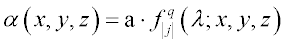

Absorption or gain option, which is positive for an absorbing medium or negative for
a gain (assigning) medium.
Syntax
... [ ABSORB a [ j q t ] ]
| Option | Description |
|---|
| a | volume absorption in inverse length units |
| j | its magnitude is the SURFACE designation for this
function when tracing a ray in this inhomogeneous medium |
| t | step length |
Remarks
- If an absorption is not given (or zero),
the program uses the wavelength and the imaginary part of the complex refractive
index (if specified) to calculate the absorption.
- Inhomogeneous absorption or gain can be
handled by assigning to the medium a GENERAL polynomial in the
global coordinates X,Y,Z or USERFUNC function (with additional
wavelength w dependence).
- The magnitude of j is
the SURFACE designation for this function.
-
The absorption coefficient at each point in the medium is then given by:

- The t is the step length
to be used by the program when tracing a ray in this inhomogeneous medium.
ABSORB Examples